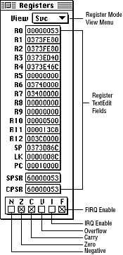
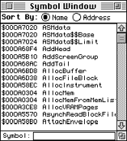

Figure 1: CPU Registers window.
This section first provides an annotated illustration of the window, then discusses the different View options available from the pop-up menu.
Table 1: Working with the CPU Registers window.
--------------------------------------------------------
To... |Do this...
--------------------------------------------------------
Change a register |Click on it to select it, then enter
|or paste any valid expression.
--------------------------------------------------------
Set or Clear the |Click the appropriate Status checkbox
current status |and check it to set the bit, clear it
and/or interrupt |to clear the bit. You can achieve the
bits (CPSR) |same result by editing the CPSR field
|directly.
--------------------------------------------------------
Set or clear the |Select and edit the SPSR displayed
saved status and |value. If the SPSR field is not
interrupt bits |associated with the correct mode, it
(SPSR) |is dimmed and displays "not avbl."
|You cannot edit the field.
--------------------------------------------------------
Change the program|Select and edit the displayed PC
counter (PC) |value.
--------------------------------------------------------
Figure 2: Registers window View options.
Use the Registers window View menu to select the operating mode.

Figure 3: Symbol window.
The following table illustrates how you can work with the Symbol window.
Table 2: Working with the Symbol window
--------------------------------------------------------
To... |Do this...
--------------------------------------------------------
Open the window|Press Command-Y or choose Symbols from
|the View menu to view the Symbol window.
|
--------------------------------------------------------
Change the |By default, symbols are sorted by name.
sorting |To sort them by address, click the
algorithm |Address radio button. To resort them by
|name, click the Name radio button.
--------------------------------------------------------
Use auto-search|The Symbol window supports auto-search
|in the Symbol field at the bottom of the
|window. Entering the beginning
|characters of a symbol and pressing
|Return highlights the first matching
|symbol. If you're debugging C++ code,
|the Symbol window shows mangled
|names.After a search, you can copy a
|symbol from the editable field at the
|bottom of the window, even for a partial
|match.
--------------------------------------------------------